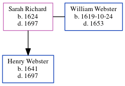

Sarah May Webster (née Richard) 1624 - 1697
[ Home ] | [ Calendar ] | [ Surnames Index ] | [ Census Index ] | [ Family History ]Sarah Richard was born in , Virginia, USA in 16241 and married William Webster (with whom she had 1 child, Henry) in 1644.
She died in 1697 in 1.
Children
- Henry was born in 1641
Citations
- OneWorldTree Online publication - Provo, UT, USA: MyFamily.com, Inc.
Family Tree
Generated by ged2site. Last updated on Jun 6, 2024